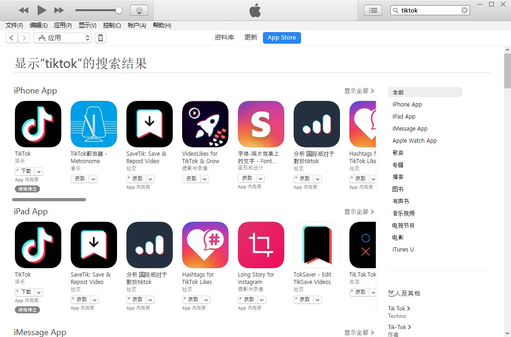
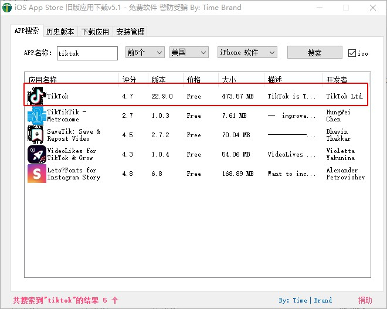
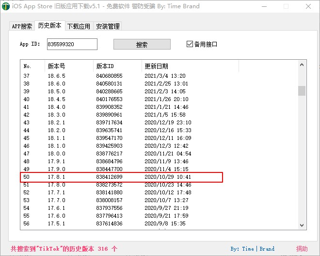
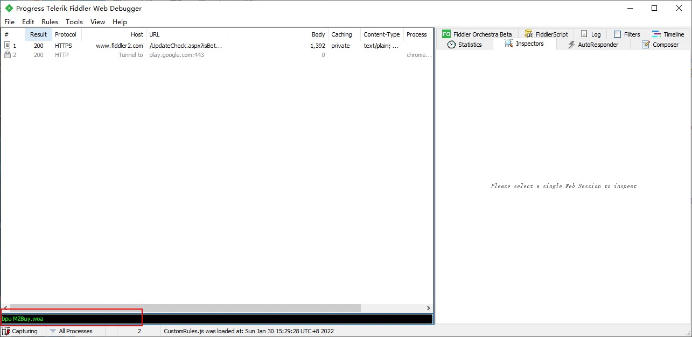
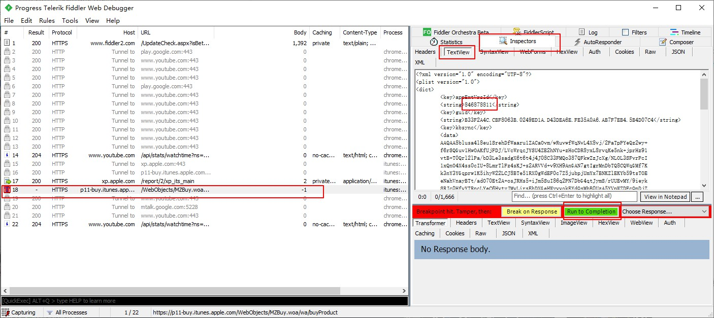

前言
因为自己本身有每天中午观看tiktok半小时需求，晚上偶尔也看半小时左右。前段时间换了新手机，忘记了整个流程，所以也是查阅搜索了相关博客、油管视频，现总结如下。声明：本人纯属个人使用探索，为记录自己需要内容或学习感悟，不涉及商业用途，如有侵权，请告知并会删除。
所需工具
一部iPhone，一个美区appleid，iTunes(老版本)，QuantumultX(或是ShadowRocket等)，爱思助手(或是iMazing用于安装ipa)，Fiddler(软件抓包)，版本号对应版本id查找工具。
下载对应版本TikTok
1.先安装老版本iTunes，在iTunes–智能刷机–其他工具，选择最后一个支持应用商店的iTunes下载并安装。登录自己的美区账号，找到tiktok

2.打开旧版应用下载工具，先找到对应的 软件即tiktok,然后右键查看历史版本，找到我们所需的17.8.1版本，得知版本id为838412699


3.安装并打开Fiddler，复制代码bpu MZBuy.woa 将其填入左下黑色输入框内并按enter。然后在iTunes里点击下载tiktok，这时fiddler软件就会有响应反应，找到含字母T的红色图标点击选中，选择Inspectors-TextView，此时就会看到当前版本tiktok对应的版本id。我们要做的就是把第二步查找的对应版本id在此时复制替换掉，然后点击Run to Completion按钮。这个时候就等待iTunes慢慢下载完成。


4.安装对应TikTok。在上述第三步下载完之后，在iTunes资料库里有下载完的ipa文件，可以右键选择的Windows资源管理器中显示。打开爱思助手，选择我的设备–应用游戏–导入安装，然后找到刚才下载完的ipa，此时便已安装好对应版本TikTok
5.避免地区限制。在QuantumultX软件里编辑配置，找打rewrite_local一栏，将如下代码复制粘贴
1 | (?<=_region=)CN(?=&) url 307 JP |
然后在mitm一栏
1 | hostname = *.tiktokv.com, *byteoversea.com, *tik-tokapi.com |
当然首先mitm证书得配置好
至此，整个titok对应版本软件安装完并且解除限制，如果有问题再仔细看看是哪步出了问题。也可以对比网上其他教程查看。